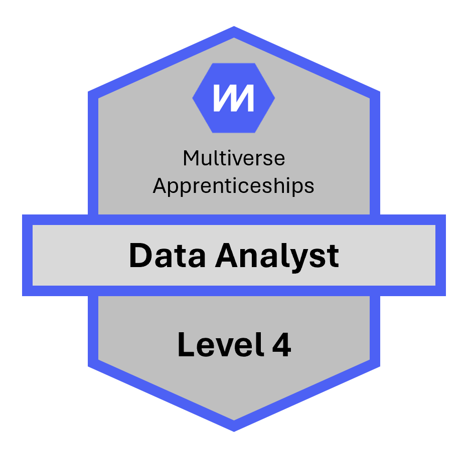
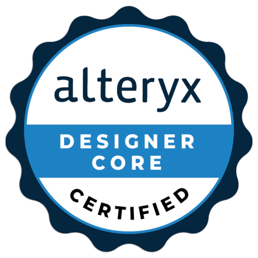

Open data analysis
Safer streets in Warrington
Analysis of public crime data to identify hotspot patterns, surface local risk areas and frame practical options for reducing harm.
Data, Analytics & AI Solutions Engineering
I help organisations move from scattered data and ambitious ideas to clear decisions, trusted analytics and practical AI-enabled ways of working.
About
My path into data started with hands-on analyst work at Abicor Binzel UK, where I saw how clearer information could change the quality and speed of decisions. I then moved into technology sales at HPE, building commercial discipline while deepening my data capability through HPE's Data Academy and a Level 4 Data Analyst apprenticeship with Multiverse.
At Methods Analytics, I worked as a Data & AI Consultant advising public and private sector organisations on how to apply data to real societal and business problems. Today, as a Solutions Engineer at Alteryx, I bring that mix of strategy, stakeholder communication and technical delivery into presales conversations with UK public sector customers.
Selected work
A mix of descriptive, diagnostic and exploratory analytics projects focused on practical outcomes rather than dashboards for their own sake.
Analysis of public crime data to identify hotspot patterns, surface local risk areas and frame practical options for reducing harm.
A Python-led exploration of tweets mentioning Cheshire Police, designed to understand public sentiment and communication signals.
Future project exploring how teams can combine data products, automation and AI to improve front-line decisions.
Certifications

Achieved Winter 2023
Achieved August 2024
Achieved January 2025

Achieved September 2025
Testimonials
Lewis is a phenomenal person to work with and someone who always goes above and beyond. Whether giving individual advice, leading campaigns or managing complex matters, he always seems to find a way.
Lewis excelled at every task put before him. Whether working alone or as part of a team, his dedication, enthusiasm and knowledge impressed us greatly.
He balances a keen eye for detail with a natural ability to converse with customers on a more strategic level. His calm yet confident manner never fails to impress.
Articles & posts
How better use of data can shape policing decisions and public value.
LinkedIn articlePractical thinking on one of the most persistent barriers to analytics maturity.
Project blogA personal project journal showing planning, delivery and structured problem solving.
Contact
For portfolio conversations, collaboration opportunities or data and AI discussions, the quickest route is email or LinkedIn.